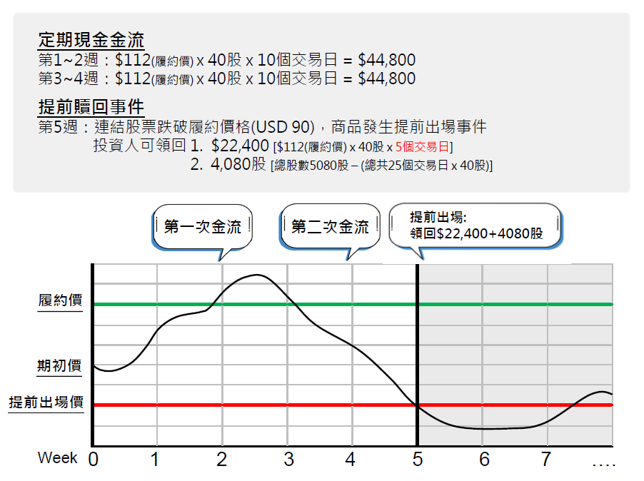

🔹 Decumulator Note
Decumulator Note為逐期用約定好高於市價的價格去賣出股票的結構型商品，可以在波動市場中提高平均賣出價格。適合希望分批賣出手上庫存標的，設定一個較高的價格且不想要一次性賣出的投資人。
🚩 產品特色
💰
條件式分批賣出，有效提高賣出價格
🕒
在震盪市場中展現優勢
🛡️
看空市場時能穩健出售部位
📘 範例商品條件
| 計價幣別 | 美元 |
|---|---|
| 連結標的 | NVDA |
| 天期 | 6個月 |
| 履約價格 (Strike) | 期初價格 × 112% |
| 提前出場價格 (KO) | 期初價格 × 90% |
| 保證交割股票量 | 4週(每天40股) |
| 每日股數 | 40股 |
| 總天數 | 127天 |
| 交割頻率 | 每兩週交割一次 |
💵 分批出售： 以高於市場價格(112%)每天分批賣出40股。
⚖️ 交割頻率： 存續期間總共127天，每天賣出40股，每兩周結算一次股票。
⚐ 期初交割金額： 期初要交付未來可能發生的交易總價金，共USD 508,000 (127天 x 40股 x 股價USD100)。
⏹️ 自動提前出場 (Knock-Out)： 股價一旦跌破提前出場價格，商品就提前出場，並返還剩餘未賣出的股票；如果四週內提前出場，會保證幫投資人賣出4週的股票量。
⚠️ 注意事項：
- 期初就必須交付預期交割股票的總價金
- 如果提前出場，剩餘的款項都會以期初價格轉換成股票
- 保證期間4週內提前出場，不會等到4週才結束，發行機構會提前把4週的股票總量以履約價格112%賣出，返還款項給投資人
📈 情境分析
情境1:
未觸及提前出場價格前，兩週結算一次賣出股票的款項
觸及提前出場價格後，會依照交易日返還賣出股票的款項，剩餘未賣出的股票也在提前出場時一併返回給投資人。
未觸及提前出場價格前，兩週結算一次賣出股票的款項
觸及提前出場價格後，會依照交易日返還賣出股票的款項，剩餘未賣出的股票也在提前出場時一併返回給投資人。

情境2:
第1週就觸及提前出場價格，商品就會立即出場
因為發行時有設定保證賣出4週量的股票，所以出場時會把發行起算4週的股票都賣出，並返還款項及剩餘股數給投資人。
第1週就觸及提前出場價格，商品就會立即出場
因為發行時有設定保證賣出4週量的股票，所以出場時會把發行起算4週的股票都賣出，並返還款項及剩餘股數給投資人。

❓ 常見問題
Q1
結構型商品不可交易標的及幣別？
Q2
連結股票若發生合併、併購、國有化、破產或下市怎麼辦？
Q3
連結股票若發生股票分割（Stock Split）怎麼處理？
Q4
境外結構型商品的接股成本如何認列？
×
×